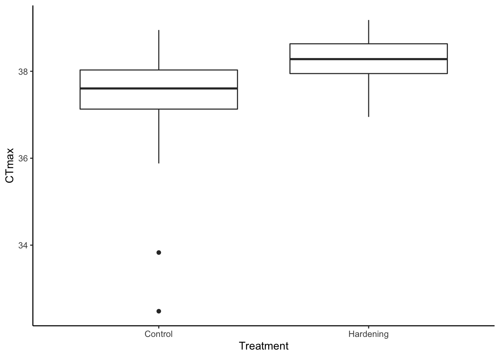

7 Creating a script
Now that we have a bunch of fundamental skills, we are going to integrate them from top-to-bottom in the form of a brand new script. This will help us practice what it actually feels like to explore and analyze a data set on our own.
- Each saved script must be able to be run sequentially from top to bottom without failing.
source()function or the Source button should run without error.- The document should proceed in a rational order.
7.1 Pseudo-script form
# ------------------------------------------------------------------------------
# Title: The general form template of a script
# Date
# Author
# ------------------------------------------------------------------------------
# Load libraries
require(tidyverse)
# Load data
df <- read_csv("file.csv")
# Analyze data
df %>%
group_by(groups) %>%
summarise(avg = mean(dep_var))
# Visualize
df %>%
ggplot() +
geom_boxplot(aes(x = ind_var, y = dep_var))
# Statistics
mod <- aov(dep_var ~ ind_var, data = df)This is just an example of a general structure of the script. When you are actually exploring your data, you should have more exploration, analysis, and visualization in your script.
7.2 Script for CTmax data
# CT max data ------------------------------------------------------------------
# Thomas O'Leary
# Load library
library(tidyverse)
# Load data
df <- read_delim("Populations_CTmax.csv", delim = ";")
# Rows: 336 Columns: 3
# ── Column specification ────────────────────────────────────────────────────────
# Delimiter: ";"
# chr (2): Population, Treatment
# dbl (1): CTmax
#
# ℹ Use `spec()` to retrieve the full column specification for this data.
# ℹ Specify the column types or set `show_col_types = FALSE` to quiet this message.
# Get averages and standard deviations
df %>%
group_by(Population, Treatment) %>%
summarise(ct_max = mean(CTmax),
sd = sd(CTmax))
# `summarise()` has grouped output by 'Population'. You can override using the
# `.groups` argument.
# # A tibble: 14 × 4
# # Groups: Population [7]
# Population Treatment ct_max sd
# <chr> <chr> <dbl> <dbl>
# 1 Chorges Control 37.7 0.373
# 2 Chorges Hardening 38.3 0.460
# 3 Frankfurt Control 37.9 0.515
# 4 Frankfurt Hardening 38.5 0.458
# 5 Hamburg Control 37.3 1.10
# 6 Hamburg Hardening 38.1 0.301
# 7 Hannover Control 37.6 0.948
# 8 Hannover Hardening 38.3 0.372
# 9 Mols Control 37.1 0.395
# 10 Mols Hardening 38.1 0.316
# 11 Siena Control 38.1 0.349
# 12 Siena Hardening 38.7 0.391
# 13 Skagen Control 36.8 0.517
# 14 Skagen Hardening 37.8 0.408
# Make plots ----
# Make a box plot
df %>%
ggplot() +
geom_boxplot(aes(x = Treatment,
y = CTmax)) +
theme_classic()
# Color by population
df %>%
ggplot() +
geom_boxplot(aes(x = Treatment,
y = CTmax,
color = Population)) +
theme_classic()
# Run analysis
mod <- aov(CTmax ~ Population*Treatment,
data = df)
broom::tidy(mod)
# # A tibble: 4 × 6
# term df sumsq meansq statistic p.value
# <chr> <dbl> <dbl> <dbl> <dbl> <dbl>
# 1 Population 6 40.1 6.68 22.7 2.75e-22
# 2 Treatment 1 48.9 48.9 166. 6.99e-31
# 3 Population:Treatment 6 2.63 0.439 1.49 1.82e- 1
# 4 Residuals 322 94.9 0.295 NA NA